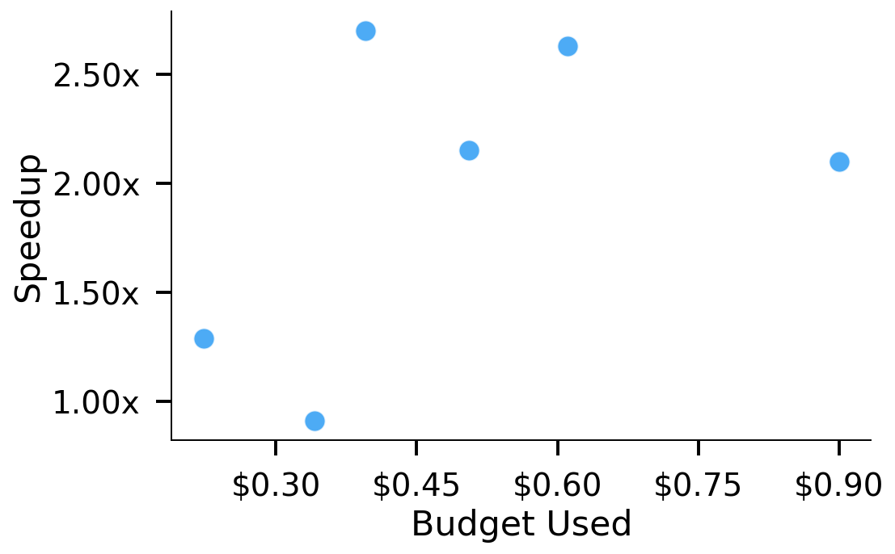
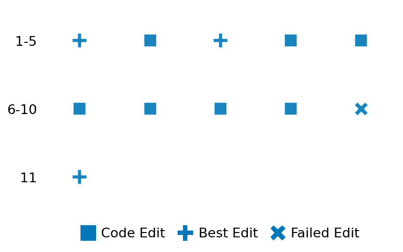

SETTING:
You're an autonomous programmer tasked with solving a specific problem. You are to use the commands defined below to accomplish this task. Every message you send incurs a cost—you will be informed of your usage and remaining budget by the system.
You will be evaluated based on the best-performing piece of code you produce, even if the final code doesn't work or compile (as long as it worked at some point and achieved a score, you will be eligible).
Apart from the default Python packages, you have access to the following additional packages:
- cryptography
- cvxpy
- cython
- dace
- dask
- diffrax
- ecos
- faiss-cpu
- hdbscan
- highspy
- jax
- networkx
- numba
- numpy
- ortools
- pandas
- pot
- psutil
- pulp
- pyomo
- python-sat
- pythran
- scikit-learn
- scipy
- sympy
- torch
YOUR TASK:
Your objective is to define a class named `Solver` in `solver.py` with a method:
```
class Solver:
def solve(self, problem, **kwargs) -> Any:
"""Your implementation goes here."""
...
```
IMPORTANT: Compilation time of your init function will not count towards your function's runtime.
This `solve` function will be the entrypoint called by the evaluation harness. Strive to align your class and method implementation as closely as possible with the desired performance criteria.
For each instance, your function can run for at most 10x the reference runtime for that instance. Strive to have your implementation run as fast as possible, while returning the same output as the reference function (for the same given input). Be creative and optimize your approach!
Your messages should include a short thought about what you should do, followed by a _SINGLE_ command. The command must be enclosed within ``` and ```, like so:
<Reasoning behind executing the command>
```
<command>
```
IMPORTANT: Each set of triple backticks (```) must always be on their own line, without any other words or anything else on that line.
Here are the commands available to you. Ensure you include one and only one of the following commands in each of your responses:
- `edit`: Replace a range of lines with new content in a file. This is how you can create files: if the file does not exist, it will be created. Here is an example:
```
edit
file: <file_name>
lines: <start_line>-<end_line>
---
<new_content>
---
```
The command will:
1. Delete the lines from <start_line> to <end_line> (inclusive)
2. Insert <new_content> starting at <start_line>
3. If both <start_line> and <end_line> are 0, <new_content> will be prepended to the file
Example:
edit
file: solver.py
lines: 5-7
---
def improved_function():
print("Optimized solution")
---
- `ls`: List all files in the current working directory.
- `view_file <file_name> [start_line]`: Display 100 lines of `<file_name>` starting from `start_line` (defaults to line 1).
- `revert`: Revert the code to the best-performing version thus far.
- `reference <string>`: Query the reference solver with a problem and receive its solution. If the problem's input is a list, this command would look like:
```
reference [1,2,3,4]
```
- `eval_input <string>`: Run your current solver implementation on the given input. This is the only command that shows stdout from your solver along with both solutions. Example:
```
eval_input [1,2,3,4]
```
- `eval`: Run evaluation on the current solution and report the results.
- `delete`: Delete a range of lines from a file using the format:
```
delete
file: <file_name>
lines: <start_line>-<end_line>
The command will delete the lines from <start_line> to <end_line> (inclusive)
Example:
delete
file: solver.py
lines: 5-10
```
- `profile <filename.py> <input>`: Profile your currently loaded solve method's performance on a given input. Shows the 25 most time-consuming lines. Requires specifying a python file (e.g., `solver.py`) for validation, though profiling runs on the current in-memory code.
Example:
```
profile solver.py [1, 2, 3]
```
- `profile_lines <filename.py> <line_number1, line_number2, ...> <input>`: Profiles the chosen lines of the currently loaded code on the given input. Requires specifying a python file for validation.
Example:
```
profile_lines solver.py 1,2,3 [1, 2, 3]
```
**TIPS:**
After each edit, a linter will automatically run to ensure code quality. If there are critical linter errors, your changes will not be applied, and you will receive the linter's error message. Typically, linter errors arise from issues like improper indentation—ensure your edits maintain proper code formatting.
**Cython Compilation:** Edits creating or modifying Cython (`.pyx`) files will automatically trigger a compilation attempt (requires a `setup.py`). You will be notified if compilation succeeds or fails. If it fails, the edit to the `.pyx` file will be automatically reverted.
If the code runs successfully without errors, the in-memory 'last known good code' will be updated to the new version. Following successful edits, you will receive a summary of your `solve` function's performance compared to the reference.
If you get stuck, try reverting your code and restarting your train of thought.
Do not put an if __name__ == "__main__": block in your code, as it will not be ran (only the solve function will).
Keep trying to better your code until you run out of money. Do not stop beforehand!
**GOALS:**
Your primary objective is to optimize the `solve` function to run as as fast as possible, while returning the optimal solution.
You will receive better scores the quicker your solution runs, and you will be penalized for exceeding the time limit or returning non-optimal solutions.
Below you find the description of the task you will have to solve. Read it carefully and understand what the problem is and what your solver should do.
**TASK DESCRIPTION:**
Queens with Obstacles Problem
Given an n × m chessboard with obstacles, the goal is to place the maximum number of queens such that no two queens attack each other. Obstacles block both placement and line of sight, meaning that queens cannot attack through them. The board size is not fixed and can be any n × m matrix.
Input: A boolean n × m numpy matrix where True represents an obstacle and False represents a valid placement square.
Example Input:
np.array([
[False, False, False, False, False, False, False, False],
[False, True, False, False, False, False, True, False],
[False, False, False, False, False, False, False, False],
[False, False, True, False, False, True, False, False],
[False, False, False, False, False, False, False, False],
[False, True, False, False, False, False, True, False],
[False, False, False, False, False, False, False, False],
[False, False, False, False, False, False, False, False]
])
Output: A list of tuples representing the positions (row, column) of the placed queens.
Example Output:
[(0, 5), (1, 0), (1, 2), (2, 4), (3, 6), (4, 1), (5, 3), (5, 7), (6, 1), (7, 6)]
Category: discrete_optimization
Below is the reference implementation. Your function should run much quicker.
from collections.abc import Iterator
import numpy as np
from ortools.sat.python import cp_model
| 01: def queen_reach(instance: np.ndarray, start: tuple[int, int]) -> Iterator[tuple[int, int]]:
| 02: """
| 03: Yields all coordinates that would be in reach of the queen, including the own position.
| 04:
| 05: Parameters:
| 06: instance (np.ndarray): The chessboard matrix with obstacles.
| 07: start (tuple): The starting position (row, column) of the queen.
| 08:
| 09: Yields:
| 10: tuple: Coordinates (row, column) that the queen can reach.
| 11: """
| 12: n, m = instance.shape
| 13: r, c = start
| 14: directions = [
| 15: (-1, -1),
| 16: (-1, 0),
| 17: (-1, 1), # Up-left, Up, Up-right
| 18: (0, -1),
| 19: (0, 1), # Left, Right
| 20: (1, -1),
| 21: (1, 0),
| 22: (1, 1), # Down-left, Down, Down-right
| 23: ]
| 24:
| 25: # yield (r, c) # Own position
| 26:
| 27: for dr, dc in directions:
| 28: nr, nc = r + dr, c + dc
| 29: while 0 <= nr < n and 0 <= nc < m:
| 30: if instance[nr, nc]: # Stop if there's an obstacle
| 31: break
| 32: yield (nr, nc)
| 33: nr += dr
| 34: nc += dc
| 35:
| 36:
| 37: def solve(self, problem: np.ndarray) -> list[tuple[int, int]]:
| 38: """
| 39: Solves the Queens with Obstacles Problem using CP-SAT.
| 40:
| 41: Parameters:
| 42: problem (np.ndarray): The chessboard matrix with obstacles.
| 43:
| 44: Returns:
| 45: list: A list of tuples representing the positions (row, column) of the placed queens.
| 46:
| 47:
| 48: NOTE: Your solution must pass validation by:
| 49: 1. Returning correctly formatted output
| 50: 2. Having no NaN or infinity values
| 51: 3. Matching expected results within numerical tolerance
| 52: """
| 53: from ortools.sat.python import cp_model
| 54:
| 55: instance = problem
| 56: n, m = instance.shape
| 57: model = cp_model.CpModel()
| 58:
| 59: # Decision variables
| 60: queens = [[model.NewBoolVar(f"queen_{r}_{c}") for c in range(m)] for r in range(n)]
| 61:
| 62: # Constraint: No queens on obstacles
| 63: for r in range(n):
| 64: for c in range(m):
| 65: if instance[r, c]:
| 66: model.Add(queens[r][c] == 0)
| 67:
| 68: # Constraint: No two queens attack each other
| 69: for r in range(n):
| 70: for c in range(m):
| 71: if not instance[r, c]:
| 72: reach_positions = list(queen_reach(instance, (r, c)))
| 73: print(f"Queen at ({r}, {c}) can reach: {reach_positions}")
| 74: # If we place a queen at (r, c), ensure no other queens are in reach
| 75: model.Add(
| 76: sum(queens[nr][nc] for nr, nc in reach_positions) == 0
| 77: ).only_enforce_if(queens[r][c])
| 78:
| 79: # Maximize the number of queens placed
| 80: model.Maximize(sum(queens[r][c] for r in range(n) for c in range(m)))
| 81:
| 82: solver = cp_model.CpSolver()
| 83: solver.parameters.log_search_progress = True
| 84: status = solver.Solve(model)
| 85:
| 86: if status == cp_model.OPTIMAL or status == cp_model.FEASIBLE:
| 87: return [(r, c) for r in range(n) for c in range(m) if solver.Value(queens[r][c])]
| 88: else:
| 89: return []
| 90:
This function will be used to check if your solution is valid for a given problem. If it returns False, it means the solution is invalid:
from collections.abc import Iterator
import numpy as np
from ortools.sat.python import cp_model
| 01: def is_solution( problem: np.ndarray, solution: list[tuple[int, int]]) -> bool:
| 02: """
| 03: Verifies that a given solution is valid, ensuring no conflicts and all queens are placed on valid squares.
| 04:
| 05: Parameters:
| 06: problem (np.ndarray): The chessboard matrix with obstacles.
| 07: solution (list): A list of tuples representing the positions (row, column) of the placed queens.
| 08:
| 09: Returns:
| 10: bool: True if the solution is valid and optimal, False otherwise.
| 11: """
| 12: instance = problem
| 13: n, m = instance.shape
| 14: occupied = set(solution)
| 15:
| 16: for r, c in solution:
| 17: if r < 0 or r >= n or c < 0 or c >= m:
| 18: logging.error(f"Queen placed outside the board at position ({r}, {c})")
| 19: return False
| 20:
| 21: # Ensure all queens are placed on valid squares
| 22: for r, c in solution:
| 23: if instance[r, c]:
| 24: logging.error(f"Queen placed on obstacle at position ({r}, {c})")
| 25: return False # A queen is placed on an obstacle
| 26:
| 27: # Ensure no two queens attack each other
| 28: for r, c in solution:
| 29: for nr, nc in queen_reach(instance, (r, c)):
| 30: if (nr, nc) in occupied and (nr, nc) != (r, c):
| 31: logging.error(
| 32: f"Queens at positions ({r}, {c}) and ({nr}, {nc}) attack each other"
| 33: )
| 34: return False # Conflict detected
| 35:
| 36: # Check optimality
| 37: optimal_solution = solve(problem)
| 38: optimal_value = len(optimal_solution)
| 39: current_value = len(solution)
| 40:
| 41: return current_value >= optimal_value
| 42:
 AlgoTuner Trajectory
AlgoTuner Trajectory
AlgoTune Task:
queens_with_obstacles
Model:
Gemini 2.5 Pro
Speedup
2.870x
Total Budget
$1.00
Initial System Prompt
AlgoTune Task Description
Queens with Obstacles Problem
Given an n × m chessboard with obstacles, the goal is to place the maximum number of queens such that no two queens attack each other. Obstacles block both placement and line of sight, meaning that queens cannot attack through them. The board size is not fixed and can be any n × m matrix.
Input: A boolean n × m numpy matrix where True represents an obstacle and False represents a valid placement square.
Example Input:
np.array([
[False, False, False, False, False, False, False, False],
[False, True, False, False, False, False, True, False],
[False, False, False, False, False, False, False, False],
[False, False, True, False, False, True, False, False],
[False, False, False, False, False, False, False, False],
[False, True, False, False, False, False, True, False],
[False, False, False, False, False, False, False, False],
[False, False, False, False, False, False, False, False]
])
Output: A list of tuples representing the positions (row, column) of the placed queens.
Example Output:
[(0, 5), (1, 0), (1, 2), (2, 4), (3, 6), (4, 1), (5, 3), (5, 7), (6, 1), (7, 6)]
Category: discrete_optimization
Reference Implementation
from collections.abc import Iterator
import numpy as np
from ortools.sat.python import cp_model
def queen_reach(instance: np.ndarray, start: tuple[int, int]) -> Iterator[tuple[int, int]]:
"""
Yields all coordinates that would be in reach of the queen, including the own position.
Parameters:
instance (np.ndarray): The chessboard matrix with obstacles.
start (tuple): The starting position (row, column) of the queen.
Yields:
tuple: Coordinates (row, column) that the queen can reach.
"""
n, m = instance.shape
r, c = start
directions = [
(-1, -1),
(-1, 0),
(-1, 1), # Up-left, Up, Up-right
(0, -1),
(0, 1), # Left, Right
(1, -1),
(1, 0),
(1, 1), # Down-left, Down, Down-right
]
# yield (r, c) # Own position
for dr, dc in directions:
nr, nc = r + dr, c + dc
while 0 <= nr < n and 0 <= nc < m:
if instance[nr, nc]: # Stop if there's an obstacle
break
yield (nr, nc)
nr += dr
nc += dc
def solve(self, problem: np.ndarray) -> list[tuple[int, int]]:
"""
Solves the Queens with Obstacles Problem using CP-SAT.
Parameters:
problem (np.ndarray): The chessboard matrix with obstacles.
Returns:
list: A list of tuples representing the positions (row, column) of the placed queens.
NOTE: Your solution must pass validation by:
1. Returning correctly formatted output
2. Having no NaN or infinity values
3. Matching expected results within numerical tolerance
"""
from ortools.sat.python import cp_model
instance = problem
n, m = instance.shape
model = cp_model.CpModel()
# Decision variables
queens = [[model.NewBoolVar(f"queen_{r}_{c}") for c in range(m)] for r in range(n)]
# Constraint: No queens on obstacles
for r in range(n):
for c in range(m):
if instance[r, c]:
model.Add(queens[r][c] == 0)
# Constraint: No two queens attack each other
for r in range(n):
for c in range(m):
if not instance[r, c]:
reach_positions = list(queen_reach(instance, (r, c)))
print(f"Queen at ({r}, {c}) can reach: {reach_positions}")
# If we place a queen at (r, c), ensure no other queens are in reach
model.Add(
sum(queens[nr][nc] for nr, nc in reach_positions) == 0
).only_enforce_if(queens[r][c])
# Maximize the number of queens placed
model.Maximize(sum(queens[r][c] for r in range(n) for c in range(m)))
solver = cp_model.CpSolver()
solver.parameters.log_search_progress = True
status = solver.Solve(model)
if status == cp_model.OPTIMAL or status == cp_model.FEASIBLE:
return [(r, c) for r in range(n) for c in range(m) if solver.Value(queens[r][c])]
else:
return []Best AlgoTuner-Generated Code
solver.py
import numpy as np
from ortools.sat.python import cp_model
from typing import Any
class Solver:
def solve(self, problem: np.ndarray, **kwargs) -> Any:
"""
Solves the Queens with Obstacles Problem using an efficient CP-SAT model
with parallel search.
"""
instance = problem
n, m = instance.shape
model = cp_model.CpModel()
# Decision variables for non-obstacle cells
valid_cells = [(r, c) for r in range(n) for c in range(m) if not instance[r, c]]
if not valid_cells:
return []
queens = {cell: model.NewBoolVar(f"q_{cell[0]}_{cell[1]}") for cell in valid_cells}
# Helper to add constraints, avoiding repeated code.
def add_at_most_one_constraint(segment):
if len(segment) > 1:
model.AddAtMostOne(segment)
# Horizontal segments
for r in range(n):
segment = []
for c in range(m):
if not instance[r, c]:
segment.append(queens[(r, c)])
else:
add_at_most_one_constraint(segment)
segment = []
add_at_most_one_constraint(segment)
# Vertical segments
for c in range(m):
segment = []
for r in range(n):
if not instance[r, c]:
segment.append(queens[(r, c)])
else:
add_at_most_one_constraint(segment)
segment = []
add_at_most_one_constraint(segment)
# Diagonal segments (r-c = k)
for k in range(1 - m, n):
segment = []
r_start, c_start = max(0, -k), max(0, k)
r, c = r_start, c_start
while r < n and c < m:
if not instance[r, c]:
segment.append(queens[(r, c)])
else:
add_at_most_one_constraint(segment)
segment = []
r += 1
c += 1
add_at_most_one_constraint(segment)
# Anti-diagonal segments (r+c = k)
for k in range(n + m - 1):
segment = []
r_start = max(0, k - m + 1)
c_start = k - r_start
r, c = r_start, c_start
while r < n and c >= 0:
if not instance[r, c]:
segment.append(queens[(r, c)])
else:
add_at_most_one_constraint(segment)
segment = []
r += 1
c -= 1
add_at_most_one_constraint(segment)
# Objective: Maximize the number of queens
model.Maximize(sum(queens.values()))
# Solve the model
solver = cp_model.CpSolver()
# Use a moderate number of workers for parallel search.
# This is a balance between parallel speedup and overhead.
solver.parameters.num_search_workers = 4
status = solver.Solve(model)
solution = []
if status == cp_model.OPTIMAL or status == cp_model.FEASIBLE:
for cell in valid_cells:
if solver.Value(queens[cell]):
solution.append(cell)
return solutionSpeedup vs Budget Plot
Speedup vs Budget

Action Sequence
